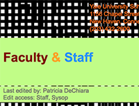

Module 2 – ASSIGNMENT TWO: DESIGN/COLOR/USABILITY ANALYSIS (by Johnson Adigun)Introduction For this assignment, I look at two university websites: Yale University’s School of Art (YUSA) and Stanford’s University’s Department of Art and Art History (SUAA). Both are typical university department sites that are designed to provide more information on the program, faculty and other pieces important for prospective and current students. Both websites are also part of the larger university structure but have their distinct sites. YUSA has been around since 1869. Since it is coded with Ruby on Rails it is safe to assume that this current version was released sometime after 2005. The website is set up as a wiki which allows students to edit portions of the site; distinct credit for website development and graphic design is given to a faculty member and two previous students. SUAA dates back to 1891. The website uses modern html and is coded in Drupal which makes it harder to date the current version, however it is safe to assume that Stanford managers keep the up-to-date web design technology high on their priority lists (or at the very least they updated the sites recently). Other than credit to Stanford University, no credit for design is given on the site. |
|
Evaluation YUSA breaks almost all of the basic design, color and usability principles. The main menu is on the right but other items, mostly boxes of text, on the page are not lined up. On some pages the text box is centered in the middle – which is jarring and departs from other templates. The use of color on this site is especially offensive: colors are not complementary, and the attempt to use contrast to divide elements on the page fails to make the text easier to read since it is still laying across the repeated image in the background. Some of the colors used are rather vibrant but used against the text or background that does not complement them. On contrast, seems like the designers purposefully took all best practices of how to guide the user around the page and did the opposite. No focal point or white space can be identified. The biggest offenses of YUSA are in the usability category. For example, only when you click on “AboutThisSite” can you access Help, Travel, Program menu items which are aligned across the top – the user has to click around to try to figure out which submenus could logically (or not logically) contain the information they are looking for. In addition, on “EverythingElse” page additional information “program, history, mission” are all aligned on the bottom and contain new and different submenus. Some of these elements should be in the main menu to the right and choosing the ‘additional’ menu uniformly would be useful for the user. This navigation does not make sense. Repetition on this site is unfortunate and jarring. The example above also speaks to their lack of understanding of the need to repeat certain elements on each page so that users can easily find information from any page they click on. In addition, the site uses background image repetition on each page that is mostly an animated GIF. This is incredibly disrupting to user experience and varies on each page. Showcasing student art like this does no favors to the student who created it. |
 |
SUAA |
|
Conclusion |
|